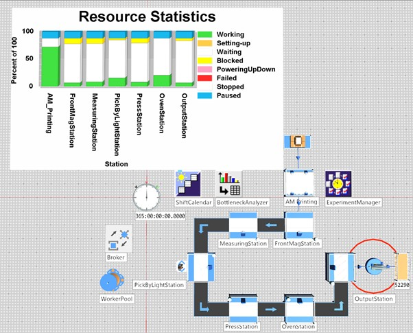

Optimised Simulation
While the initial simulation of the FESTO assembly line alone demonstrated significant spare capacity at approximately 238,000 phones per year, this result was misleading; it assumed an unlimited supply of casings feeding into the line. In reality, the 3D printing stage acts as the true gatekeeper of the entire production system. With a real-world cycle time of 2 hours per casing on the Bambu Labs P1S, introducing the AM Printing station into the simulation caused output to collapse dramatically, exposing the need for significant optimisation before the 50,000 phones per year target could be met.

The final simulation model consists of a ParallelProc object representing the bank of 70 Bambu Labs P1S printers, configured as a 7×10 grid, feeding directly into the FESTO CP assembly line. The AM Printing station has a cycle time of 2 hours per casing, and with 70 units running simultaneously it produces sufficient casings to maintain continuous flow into the assembly line. The Resource Statistics chart tells a clear story: the AM Printing station shows the highest working percentage of any object in the model, confirming it as the dominant productive element in the system. The assembly stations, by contrast, show a high proportion of waiting time, meaning they are idle for much of the shift waiting for the next casing to arrive from the printers. This is the expected behaviour given that the printing process, even with 70 machines, only just meets the takt time requirement of the assembly line.
The simulation was run over 365 days with the ShiftCalendar configured for 9:00–17:00, Monday to Friday, with two break periods, over 48 working weeks. The final output recorded at the Drain (OutputStation) was 52,290 phones per year, exceeding the 50,000 target by 2,290 units. The PickAndPlace robotic arm, visible as the red circular arc near the OutputStation, transfers completed assemblies from the line to the output buffer and operates within the shift calendar constraints. The WorkerPool and Broker objects manage worker allocation across the stations, and the BottleneckAnalyzer confirmed that the AM Printing stage is the system bottleneck — with the Oven Station (29 seconds) remaining the bottleneck within the assembly line sub-system itself.
Experimental Manager
To systematically determine the minimum number of printers required to meet the 50,000 phones per year target, an analysis was conducted testing printer quantities from 1 to 70. The table below shows the annual output for each configuration. Values marked as simulated were directly measured in Plant Simulation, while projected values are calculated from the shift parameters and printer cycle time. The simulation results are slightly lower than pure mathematical projections due to real-world effects including shift transition delays, break periods, and queuing behaviour between the printing and assembly stages, demonstrating why simulation produces more accurate results than hand calculation alone.
| No. of Printers | Grid Layout | Annual Output | Meets 50,000 Target? |
|---|---|---|---|
| 1 | 1 × 1 | ~840 (projected) | ✗ |
| 5 | 5 × 1 | ~4,200 (projected) | ✗ |
| 10 | 2 × 5 | 9,030 (simulated) | ✗ |
| 20 | 4 × 5 | ~16,800 (projected) | ✗ |
| 30 | 5 × 6 | ~25,200 (projected) | ✗ |
| 40 | 5 × 8 | ~33,600 (projected) | ✗ |
| 50 | 5 × 10 | ~42,000 (projected) | ✗ |
| 53 | 53 × 1 | ~40,000 (simulated) | ✗ |
| 60 | 6 × 10 | ~50,400 (projected) | ✅ |
| 63 | 7 × 9 | ~52,920 (projected) | ✅ |
| 66 | 11 × 6 | 49,896 (simulated) | ✗ |
| 67 | 67 × 1 | ~50,400 (projected) | ✅ |
| 70 | 7 × 10 | 52,290 (simulated) | ✅ Final configuration |
The optimisation results demonstrate clearly that the relationship between printer count and annual output is approximately linear. Each additional printer contributes roughly 840 units per year to total output under the configured shift pattern. However, the data also reveals an important non-linearity: 66 printers, despite being projected to exceed 50,000 on paper, actually produced only 49,896 units in simulation, falling 104 units short of the target. This discrepancy highlights a critical advantage of simulation over mathematical projection: the simulation captures the real-world effects of shift transitions, break periods, and queuing that pure calculation ignores. A manufacturer relying solely on hand calculations might have committed to 66 printers believing the target was met, only to discover the shortfall in production. The final configuration of 70 printers in a 7×10 grid was selected as it reliably exceeds the 50,000 target in simulation while maintaining a realistic and commercially justifiable factory floor layout. The small surplus of 2,290 units provides a production buffer to absorb printer downtime, maintenance periods, and any quality failures that require reprinting, reflecting the lean manufacturing principle of building in just enough capacity to meet demand without excessive overproduction (Womack and Jones, 2003).
1. Negahban, A. and Smith, J.S. (2014) 'Simulation for manufacturing system design and operation: Literature review and analysis', Journal of Manufacturing Systems, 33(2), pp. 241–261.
2. Womack, J.P. and Jones, D.T. (2003) Lean Thinking: Banish Waste and Create Wealth in Your Corporation. 2nd edn. New York: Free Press.